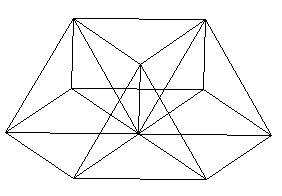
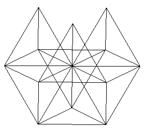

The following construction steps are a summary of the steps Marvin used to show the similarities between the VE and the 30-Verti. Marvin used a new product, "Strange Attractor", under development at Design Science Toys to build the models. See their web page here.
We begin the construction of the VE (a.k.a. the "Vector Equilibrium" and the "Cuboctahedron", see Fuller's Synergetics ) by forming a hexagon.
| Figure 1 Hexagon |
We include struts from the center of the hexagon out to the 6 vertices. Note that all these struts are of the same length.
| Figure 2 Hexagon with inner struts |
This forms 6 equilateral triangles.
We will now add addition struts to form 3 tetrahedra over 3 out of the 6 triangles in the hexagon.
|
| |
| Figure 3 Add additional struts to define 3 Tetrahedra |
Now add 3 more struts to form a triangle with the 3 vertices of the tetrahedra.
|  | |
| Figure 4 Finished top half of VE |
Flipping the structure upside-down,
| Figure 5 Flip over |
we again add struts to form 3 more tetrahedra. Make sure you do not put the tetrahedra over the existing tetrahedra. They should alternate in their spacing. They alternate in their usage of the triangles in the hexagon plane.
|  | |
| Figure 6 Three more Tetrahedra |
Finally, add 3 struts to connect these 3 new tetrahedra.
|
| |
| Figure 7 Finished VE |
This is what Fuller called the Vector Equilibrium, or VE. It is so named because all of the struts are of the same length. The outer perimeter struts have the same length as the radial struts. This is also called the cuboctahedron.
If you look carefully, you will see that the VE is defined by the intersection of 4 hexagons.
We now begin the construction of the 30-Verti.
We now start with the decagon.
| Figure 8 Decagon |
And we fill in the inner struts.
| Figure 9 Decagon with inner radial struts added |
Note that the radial struts are not the same length as the circumferential struts.
| Figure 10 Radial and Edge lengths |
It turns out that the ratio of the radial length "r" to the edge length "E" (r/E) is exactly the Golden Ratio, which is given by
|
| |
| Equation 1 The Golden Ratio |
As we will see in other sections, the Golden Ratio is the most important number when dealing with polyhedra.
We next add additional struts to define Tetrahedra over 5 of the 10 triangles of the decagon. The outer 2 struts are of length E=1.0 while the strut from the center of the decagon to the new vertex is of length r=1.6180.... Be sure that only every other triangle is given a tetrahedron.
|
| |
| Figure 11 Adding struts to make 5 Tetrahedra |
From the side view, it looks like pentagons are starting to form. It turns out that the face angles do indeed define 3 edges of a pentagon. In the next Figure, I fill in one pentagon in blue.
| Figure 12 Testing to see if a pentagon fits |
We can fit 5 such pentagons between the triangular faces. The edges of the pentagons are all of length E=1.0. The add the radial strut from the center of the decagon to the new vertices defined with the pentagons (red lines).
|
| |
| Figure 13 Adding struts to finish 5 pentagons |
Next, we add 5 more struts of length E=1.0 to form another pentagon on the "top".
 | |
| Figure 14 Adding struts to finish 5 pentagons |
We now flip the model over
| Figure 15 Model turned upside down |
and begin adding edge and radial struts to form more pentagons.
Be sure to begin the new pentagons with the edges of the triangles and not to the edges of the pentagons.
| Figure 16 A pentagon over a triangle |
We end up with the "30-Verti".
 | |
| Figure 17 The 30-Verti |
(I have made the pentagon faces "solid" so that the red radial are blocked from view. This helps with the view of the 30-Verti structure.)
The 30-Verti gets its name from its 30 vertices. This polyhedron is also known as the icosadodecahedron, one of the Archimedean "solids". This polyhedron has 20 equilateral triangular faces and 12 pentagonal faces.
If you build this structure and look carefully, you will find that the 30-Verti can be defined by 6 intersecting decagons.
This work is copyrighted, 2003 by Robert W. Gray and Marvin Solit.
You may not use any of this material, nor any material on our linked web pages,
without first obtaining written permission.